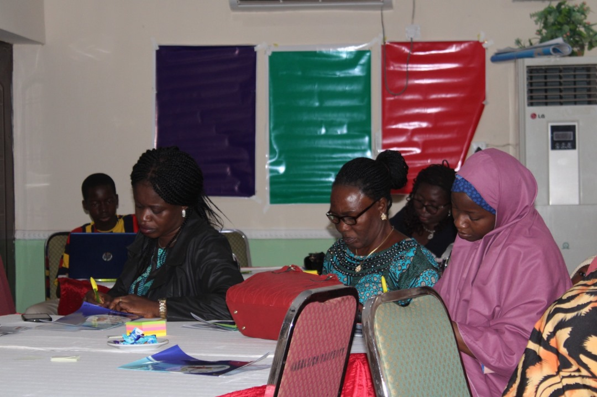
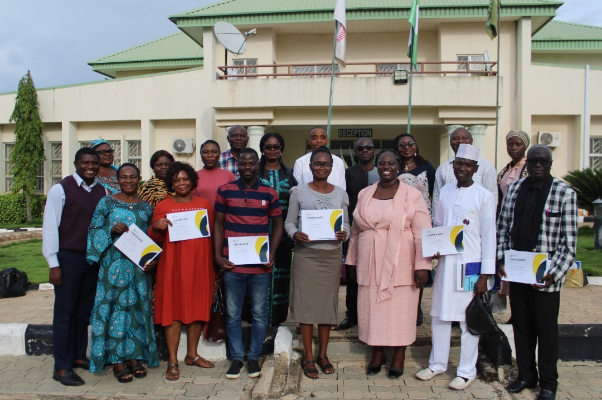
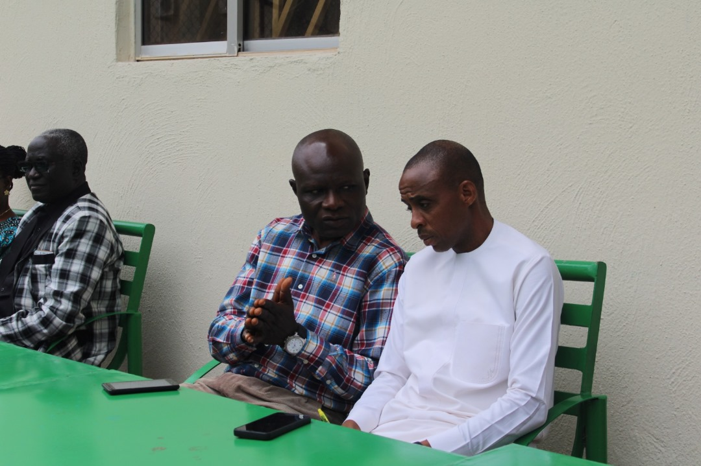

Our programs
ImpactEduc, ImpactShe and ImpactCreator: coaching built around who you lead and what you create.

ImpactShe
Our ImpactShe programme is specifically designed for female leaders in Nigeria and Africa. It provides the essential skills, knowledge, and confidence needed to excel as impactful public speakers and authentic leaders. With a strong track record in both the private and public educational sectors, we deliver high-quality training and development locally and internationally.
Apply now
ImpactEduc
Our flagship programme, ImpactEduc, equips educators with essential skills, enabling them to become effective teachers, leaders, and role models in the education sector. We believe in empowering individuals and organizations to generate transformative ideas and make a lasting impact. At Oropo Visionary Coaching Co., we are driven by our commitment to excellence in coaching and educational training. Our mission is to empower individuals and organizations, enabling them to thrive and create positive societal impact.
Apply now
ImpactCreator
Our ImpactCreator programme emphasizes leadership development and creative problem-solving. Through coaching, training, and innovative solutions, we unlock potential and inspire positive change in communities. Our innovative learning platforms cater to the demands of the modern workplace, where innovative skills, technological knowledge, and the right attitude are key to success.
Apply now